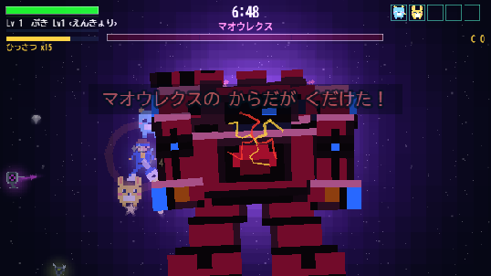
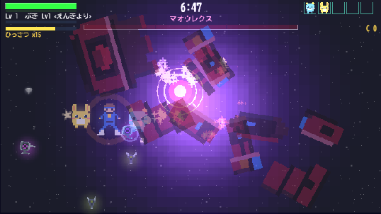
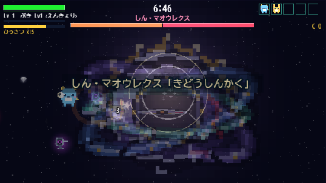
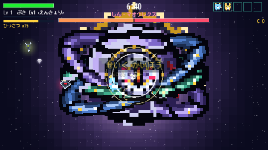
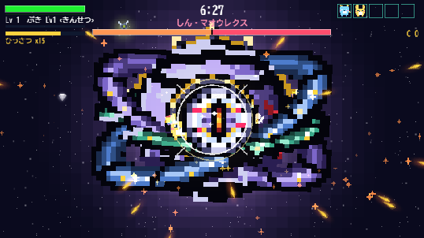

真マオウレクス「軌道神核」― 実装完了
承認された C-4改 のビジュアルを本編へ実装しました。すべて Phaser の実描画（実プレイの画面そのもの）です。
① 転生 ― 亀裂 → 粉砕 → 出現




転生の瞬間だけ音楽を止めています。「終わったと思った」ところに沈黙を置いてから、真の姿が立ち上がった瞬間に鳴らし直します。
② 攻撃3種 ― 予告は文字ではなく「形」で読ませる



攻撃を3種に絞ったのは、20秒台の戦いに5種を積むと1種あたり1回も回ってこないからです（R34で踏んだ「再生される前に終わる」と同じ失敗を避けるため）。実測では3種とも各2回以上出ています。
③ 実測（headless・3回）
| 測ったもの | 結果 | ねらい |
|---|---|---|
| 真の姿の戦闘の長さ | 21.7 / 22.9 / 21.6 秒 | 指定の20〜25秒 |
| 整列レーザーの発射 | 2回 | 各2回以上 |
| 聖句解放の発射 | 2回 | 各2回以上 |
| 殻閉じ | 成立1回 ／ 割られた2回 | どちらも起きる＝遊びとして機能している |
| 実行時エラー | 0件 | — |
| 恒久ガード | 582 → 619件（+37） | 今回踏んだ罠を全部固定 |
HPは推測ではなく実測から決めました。同じ設定でも ±10% ぶれる（最後の1手に入れるかで ±2秒動く）ので、秒数ではなく実DPSの平均 3550/秒 から 75000 を引いています。
④ 作りながら見つかった不具合（直しました）
転生カットシーンが、分離／再合体に横取りされて丸ごと消えていた
転生に入ると内部のHPを1に落とすので、同じフレームで「HP50%で分離」「33%で再合体」の判定が両方成立し、分離の演出が転生の演出を上書きしていました。実測すると「転生した：NO ／ 転生処理は走っている ／ でも通常戦闘に戻っている」という状態。実プレイでも、HP33%超から一撃で0にすれば同じことが起きます。
描き下ろした眼が、弱点コアのUIに覆われて一度も画面に出ていなかった
弱点の記号（半径34pxの金色のベタ塗り）が眼の中心を完全に塗りつぶしていました。第3形態は「装甲が開いて露出した炉心」＝そこに絵が無いので塗りが正しかったのですが、真の姿は眼そのものが絵です。弱点が絵のときは輪と照準だけにしました。
「粉々に飛び散る」が0.45秒しかなく、瞬きの間に終わっていた
撮影しようとして初めて気づきました。1.0秒へ伸ばしています。
設計プレビューは画面を480×360と見込んでいたが、実際は640×360だった
そのままの縮尺（9.4）で撮ると、球も環も光背も画面外へ出て眼の周りしか映りませんでした。7.4へ下げて全身が入るようにしています。設計プレビューは自作の描画で作った別物なので、良く見えても本編で同じには見えない、という教訓でもあります。
どれも「構文は通る・既存テストも通る・でも画面には何も出ない」形の壊れ方でした。同じことが起きないよう、37件の恒久ガードにしています。
⑤ 遊びに行くには
- 公開URL https://nori1975461.github.io/hayato-game/vortex/ ／ タイトル画面の左下が v20260827-3 なら新しいものが届いています
- すぐ見たいときは、タイトルで T → 4（れんしゅうじょう「マオウレクスとたたかう」）。通常どおり倒しきると転生します
- 本編では360秒でマオウレクスが出現します
見てみて直したいところ（大きさ・色・攻撃の激しさ・尺）があれば、場所と方向を教えてください。